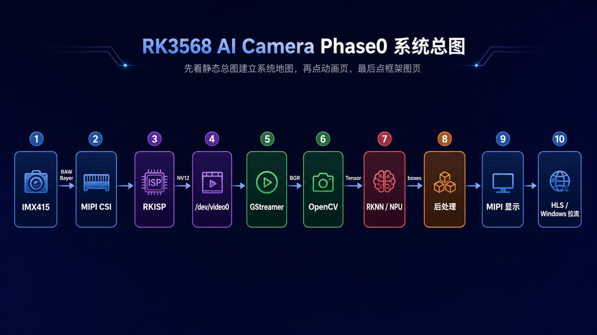

RK3568 Phase0 可视化总入口
把当前几张核心可视化页串成一个统一入口，按“先看懂，再深挖”的顺序学习
推荐顺序固定为：先看静态总图建立整体地图，再看数据流动画页理解“数据怎么流”，
再看 Camera 配置全流程理解“Linux Camera 是怎么一步步接起来的”，最后看驱动层全链路框架图做第二遍深挖。
Phase0 页面顺序从总入口开始下一页 →
首页展示图

这张图适合第一眼建立系统地图，也最适合后面做 PPT、讲项目、面试时快速展开。
四张核心页面
必看 / 第一遍补齐
Phase0 Camera 配置全流程
从 Camera 手册、原理图、DTS、Sensor 驱动一路看到 /dev/video0、GStreamer、OpenCV。
- 适合补 Linux Camera 接入过程
- 适合把“配置过程”讲清楚
- 强调 bringup，不强调芯片全景
必看 / 第二遍深挖
Phase0 驱动层全链路框架图
把 Camera、V4L2、GStreamer、OpenCV、RKNN、后处理、显示、推流按层拆开看。
- 适合第二遍深挖节点和接口
- 适合复盘格式变换和职责边界
- 是后面专项笔记的桥
参考页
Phase0 RK3568 全系统框架图
从 RK3568 芯片大系统角度看多媒体、显示、NPU、存储、IO，属于芯片级参考页。
- 不作为新人第一入口
- 适合建立 SoC 视角
- 适合后面回头补芯片地图
Camera 驱动专项
IMX415 三层驱动调用流程
把 Linux 通用驱动模型、I2C Core、IMX415 驱动拆成三层，看清 match 和两级 probe 的交接。
- 解决“谁调用 imx415_probe”
- 区分 i2c_device_probe 与 imx415_probe
- 支持按阶段点击复习
怎么用这套页面
学习顺序
可视化总入口 → 数据流动画 → Camera 配置全流程 → 驱动层全链路框架图。RK3568 全系统框架图放到最后当参考页。
讲项目顺序
静态总图 → 数据流动画 → 驱动层全链路框架图
补 Linux Camera
Camera 配置全流程 → 驱动层全链路框架图 → 对应专项笔记
回到文字笔记
任何时候看不懂，都回 Camera 驱动学习主入口、当前任务看板或正在学习的章节。